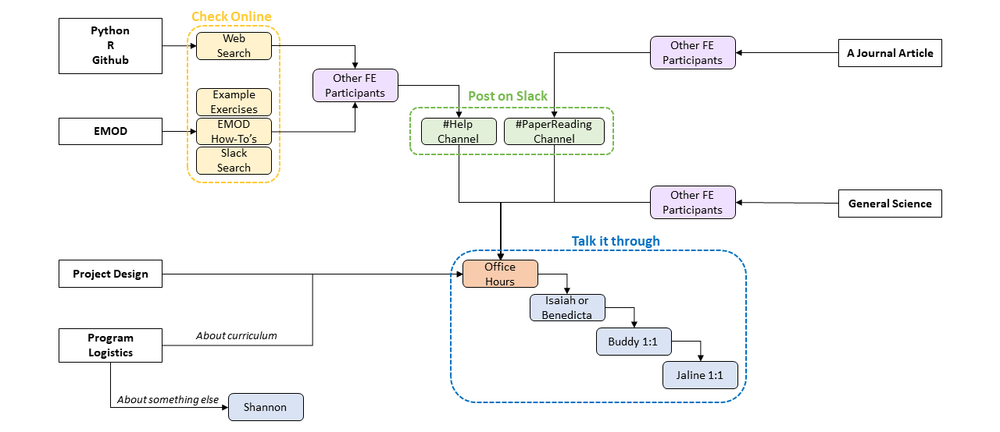

Team Communication
How to stay informed and ask for help
Slack
Slack is the preferred method of electronic communication on our team. Generally, team members are expected to respond to one another within 24 hours (within normal working hours). You are welcome to join any of the Slack channels; some are more active than others.
You are expected to be on Slack when you are working. Slack will be the primary means of communication with NU team members. You can join any channel on slack or start a new one - but these are some of the most often-used:
Chicago Channel
- Post daily “to-do list” of tasks you’re working on
- Keep an eye out for team-wide announcements
FE 2023 Channel
- Announcements and questions specific to the Faculty Enrichment Program should be posted here by both staff and participants
- Feel free to share outputs, items of interest, or other things relating to the program – this is your space!
Help Channel
- Post error messages / other issues here (along with your code & relevant outputs). You’re more likely to get a quick response, and others will benefit from seeing the solution too.
Celebrations Channel
- Proud of an accomplishment (program-related or otherwise)? Post it here so we can celebrate with you!
University email
You should be given access to a Northwestern email account and are free to use it as you see fit. However, it may be best to use a personal or home institution email for longevity of communications as NU email access may be limited after the program end.
Northwestern University administrators will use your Northwestern email for official communication, so make sure to check it occasionally.
Calendars
All meeting invites will be shared with you in advance – please be sure to stay on top of your calendar and attend all meetings in a timely fashion.
Meetings
Meetings with your buddy
Weekly 1-on-1 meetings will be held with your assigned buddy. These are designed to help you stay on track with learning materials and your project. You may use this time as you see fit but it is recommended that you discuss any problems you may be encountering in your work, results, next steps, and other questions. You and your assigned buddy will discuss any additional expectations during your first sessions to make the best use of this time.
Meetings with Jaline
Weekly 1-on-1 meetings will also be held with Jaline to discuss project progress, ideas, and needs. This meeting will be similar to buddy 1-on-1s and sometimes may be held together as a 2-on-1 to ensure that you are getting the best support possible throughout the program and everyone is on the same page. It is your responsibility to make the most of your meetings with Jaline, which includes being prepared with what you would like to discuss.
Jaline’s meeting policy:
In general, I have an open-door policy. If my office door is open, I am happy to answer questions or talk about your work—if I don’t want to be disturbed, I will close my door. Please ping me on Slack at any time and I will respond as soon as I can. However, I am not always available, so if there is something important that will take a substantial time to discuss, it is best to schedule a meeting with me.
What should you bring to a meeting with me? It is your job to make the most of this time and usually that means coming in with a list of what you’d like to talk about. Here is what we will generally cover:
What you have done: Generally I prefer that you keep me/the group aware of new analyses via Slack. But the 1-on-1 is also a good time to talk over interesting results or roadblocks:
- What analyses have you done since the last time we met? I want to see all your new results, analyzed and in pretty graphs. We may also take a deeper dive to look at individual results or brainstorm new analyses, so bring that with you.
- If you don’t have results, why not? What roadblocks are you facing and how are you working through them? What analyses or simulations are in progress?
- If you don’t have results, why not? What roadblocks are you facing and how are you working through them? What analyses or simulations are in progress?
- How are writing projects coming along?
I am asking for this information not to evaluate if you are working hard enough, but to see how your project is progressing.
Ideas: what do your results mean? What should we do next? Do we have what we need to do it?
What do you need from me? This is the time to let me know if you need a signature, a letter of recommendation, a progress report, extra compute resources, or new software.
Anything pertinent to your professional development or well-being. Are you progressing towards your goals for the program? If there are any issues in or outside of the workplace that may hinder your progress, this is a time to talk about it.
I strongly recommend you keep a log of your weekly 1-on-1’s, noting what was discussed and any next steps you’re planning to do.
Getting Help
Help with Code
We find that learning by doing is incredibly useful to improving our skill and knowledge bases. In this process, things will inevitably go awry. These mishaps provide a learning opportunity and while annoying should not be seen as discouragement to continue. There are a variety of ways to seek help – the flowchart below can help you walk through the process of where and how to get the help needed for a few types of anticipated problems. Below that are team expectations for what these steps entail.
Whenever asking for help with errors, please provide detailed information about:
- the error message
- the script you are trying to run
- what you already tried to resolve the error
Depending on the type of error further details on your system setup and program versions might be needed as well. This will ensure that whoever responds can give the best answer in less time.

Troubleshooting Steps
- Check for Existing Answers
- EMOD: Check the FE example exercises, how-tos, and coding resources for anything helpful. This is especially useful when you don’t know or have forgotten how to add certain things to your script.
- For EMOD capabilities and parameter-related questions, the EMOD malaria documentation from IDM contains the most relevant information.
- Python, R, GitHub: Search the internet more broadly. Sites such as stack overflow or package documentation (if questions on a specific function) can be particularly helpful for general coding questions. If you find a solution on one of these sites, make sure that you spend some time to understand what they are doing to fix the problem – do NOT just copy and paste.
- Search the #help channel on Slack to see if a similar question has been answered by the team previously. There are many common questions and errors experienced in running EMOD, so this space contains many useful answers
- EMOD: Check the FE example exercises, how-tos, and coding resources for anything helpful. This is especially useful when you don’t know or have forgotten how to add certain things to your script.
- Ask peers for help
- If you have tried searching online for coding troubleshooting or have general scientific question about your work, your peers are a great place to seek help. You are all learning together and come from a variety of scientific backgrounds. We highly encourage you to discuss any errors you are encountering or questions you have with each other you may be able to solve the problem together without further assistance. This peer discussion process can also be helpful in cementing what you have learned through teaching.
- Post on Slack
- If you have not found a solution after searching online and discussing with peers, then we recommend posting on the #help channel on slack so everyone can see your question. This will also help yourself and others in the future who are asking similar questions. Of note, not everyone is in the same time zone so you may need to wait for others’ availability. This is an interactive process where you will often have to try many things. Below is a checklist to help you shape posts for the #help channel so you and others can get the most out of it.
- Making the most of posting to the #help channel
- Error message: Include the entire error message in your post so the channel can fully understand the problem. It is preferable to include the text of the error message rather than just a screenshot so the key words will pop up in future searches. You may include the most important part of the text and a screenshot of the entire message if it is a particularly long error
- Link to code where the error is occurring: It is much easier for others to help you solve your problem if they can see the code that is generating the error. The easiest way to share this is through your GitHub repository, if it is up to date and viewable to team members. Be sure to link to the exact script and include any pertinent information (such as lines the error is coming from)
- Context of the error: What were you doing when the error occurred? It can be helpful to know what the goal of the script is (e.g., running simulations, analyzers, etc.) as well as the answers to the following questions:
- Did it ever work?
- Is this a new error?
- What has changed since it last worked?
- What have you done to try to solve it: Include specifics of solutions you’ve tried and how you’ve changed the code. Saying that you searched online and talked to a peer does not help the channel understand what you have done and how it impacted the error. Without this information the channel may suggest potential solutions you’ve already tried which wastes everyone’s time. Furthermore, including failed potential solutions can sometimes help us better understand what the problem is as sometimes error messages are not particularly helpful on their own.
- If you find a solution to a complicated problem that you think others would benefit from knowing, feel free to post it to the channel with the same kinds of details!
- Office Hours
- Office hours are protected, structured touchpoints that all members of the instructional staff will host to facilitate your learning experience. Most staff will have one hour scheduled per week dedicated to answering questions and providing assistance. This set aside time helps to ensure that someone is accessible to answer questions and talk about your work, without distraction, most days. You are encouraged to show up to any of the office hours – it does not have to be your buddy or the lecturer on the relevant topic as all of the staff should be able to assist or identify others if needed. This time can be used for many topics including errors encountered, general EMOD questions, or asking for feedback.
- For technical problems, office hours are particularly helpful when you have already tried a few methods of solving the problem yourself (see flowchart and code troubleshooting, below). Come prepared to discuss 1. the error that you are encountering 2. what you think may be causing the error/changes made since the code last worked, and 3. any methods you have tried to solve the problem. Be sure to have all documentation ready to help the staff understand the problem (such as pushing your code to GitHub, a copy of the full error message, etc.)
- Office hours can also be used for consultations on project design and scientific approach to the project.
Note that outside of 1:1s and office hours, instructional staff may not be immediately available for help due to their other obligations. You may bring additional questions to 1:1 sessions.
Logistics
Contact Shannon on Slack or in the office. Reach out to her as soon as possible as sometimes bureaucratic problems can take time to solve. Logistical problems include:
- Accessing team/NU resources, such as dropbox, email, and DUO
- Expenses/reimbursements
- Housing
- Arranging visitor travel
- ASTMH registration